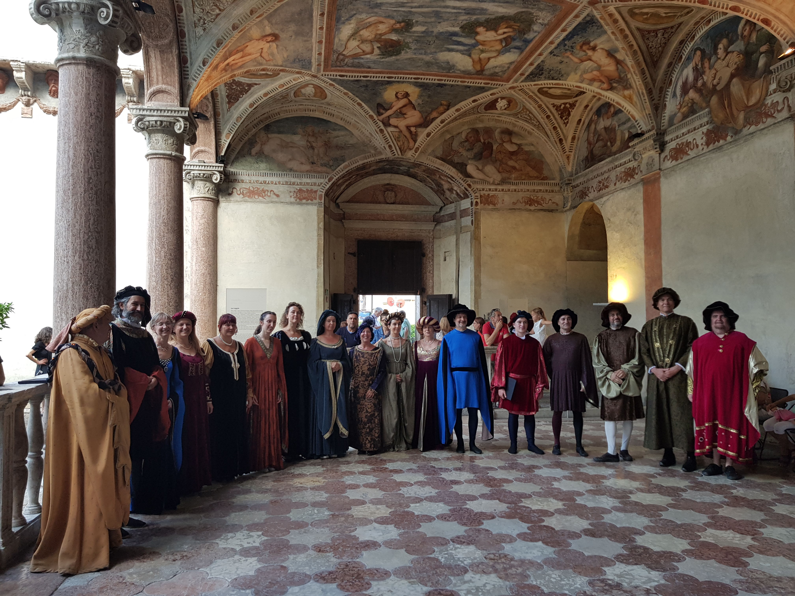

La Corale Città di Trento nacque circa 150 anni fa con la ricostituzione della Società Filarmonica che tra i suoi scopi annoverava quello di formare un'orchestra,
un coro e un corso per l'insegnamento del canto. Operò per molti anni prevalentemente come parte integrante della Società Filarmonica,
ricostituendosi nel 1889 con un regolamento proprio ed autonomo in collaborazione con l'attività operistica del Teatro Sociale di Trento e partecipando alle funzioni
solenni della Cattedrale.
Alla direzione della Corale si alternarono numerosi nomi illustri tra cui si ricordano Raffaele Bazzigotti, Francesco D'Alesio, Vincenzo Gianferrari,
Arturo Vecchia e Camillo Moser.